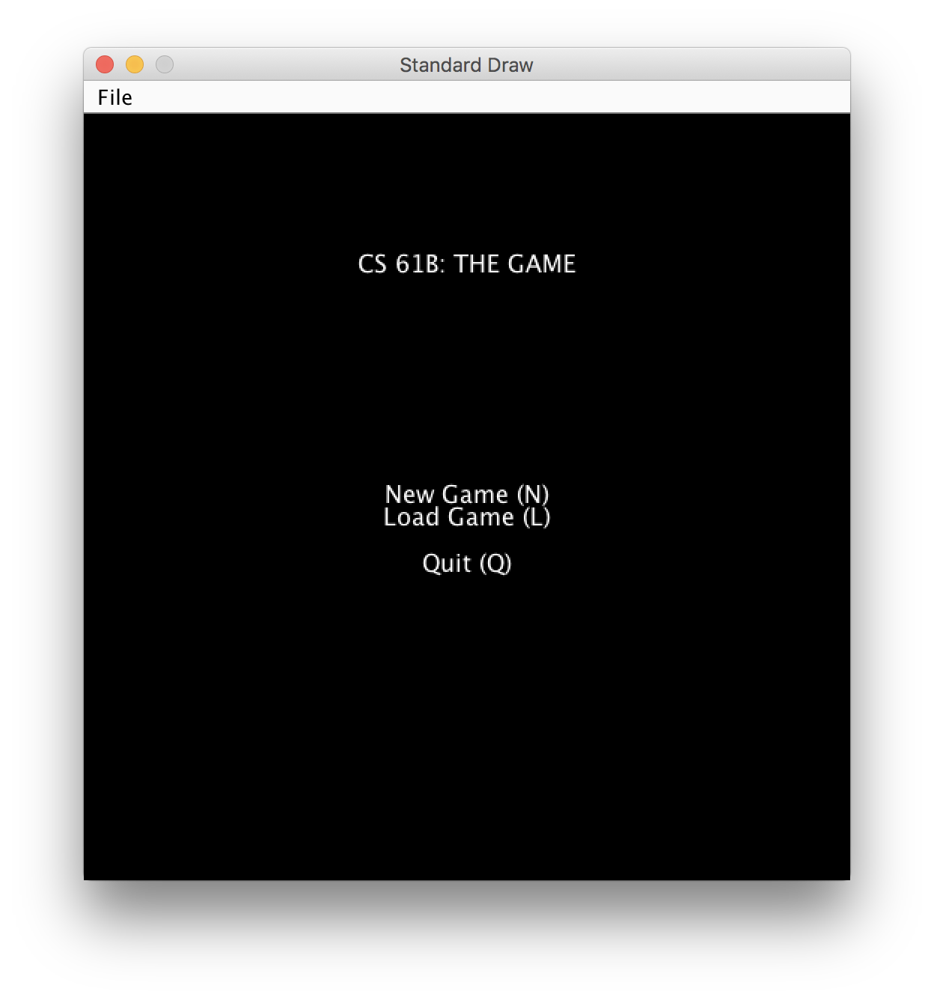
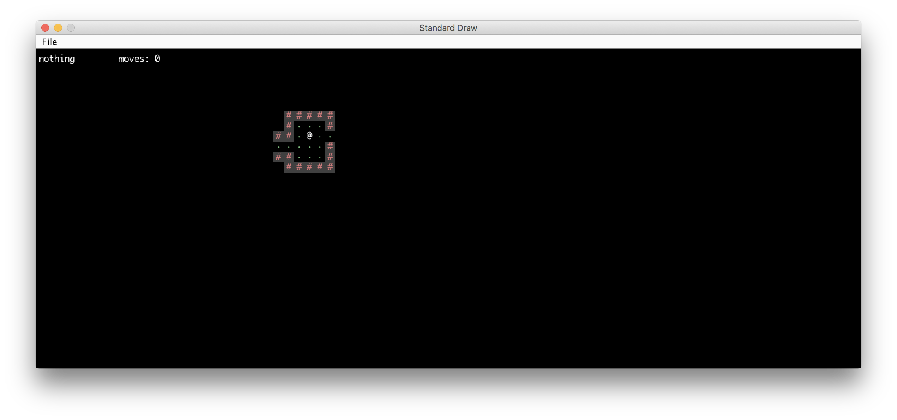
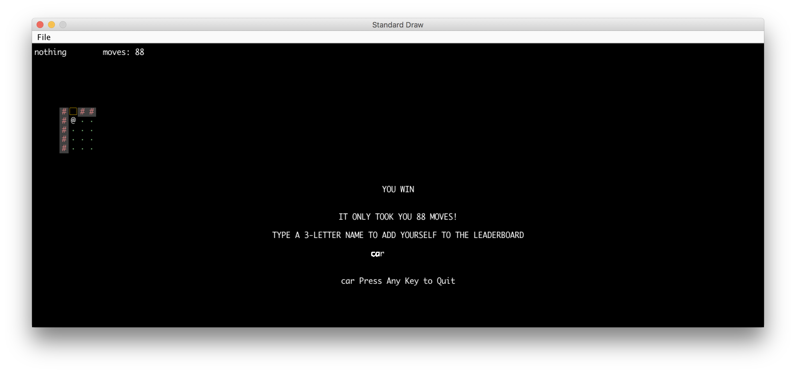
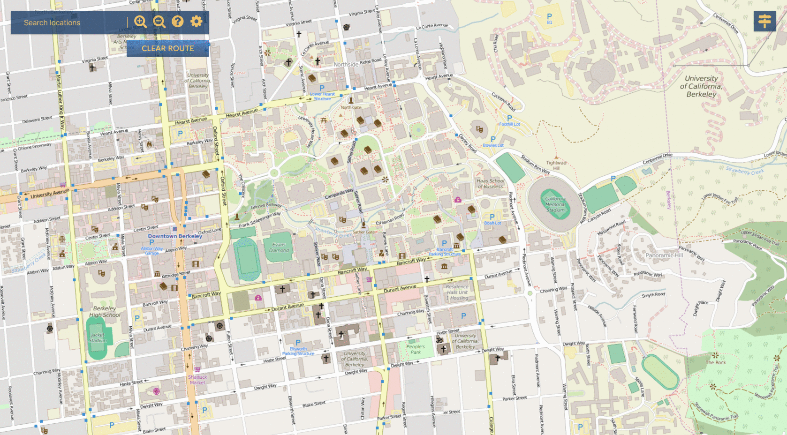

I am a Fourth-Year student at UC Berkeley studying Data Science with a domain emphasis in Cognition. I love
working with data, from the nitty-gritty cleaning to creating prediction models. In addition to data, I
also enjoy software development and try to program as much as I can during my free time. Currently, my time
is spent as a Web Editor for CCASN, as a Data Peer Consultant at the Division of
Data Sciences, and as CalTV's Executive Director.
Data Science Civic Digital Fellow, U.S. Census Bureau
June 2019 - August 2019
Developed a probabilistic fuzzy-matching program with Python, Flask, SQLite3, and
HTML to speed up processes previously done manually.
Developed a web crawler and scraper in Python with Scrapy and scikit-learn to automate
the maintenance of public-sector data collections.
Data Science Fellow, UC Berkeley Library
August 2018 - May 2019
Presented a workshop for Librarians on Introduction to Jupyter Notebooks and Python
for student research.
Held weekly drop-in hours supporting undergraduates conducting research in areas
such as data visualization, text analysis, and regression modeling.
Foundations of Data Science Course Staff (Group Tutor), UC Berkeley Statistics/EECS
August 2017 - December 2018
Provided tutoring to small groups on programming fundamentals, data visualizations,
and statistical inference techniques, and held weekly office hours.
Developed worksheets, led review sessions and created videos on hypothesis testing,
data visualization, and classification techniques.
Student Assistant, International Computer Science Institute
May 2018 - August 2018
Helped develop programming exercises in JavaScript and Python to teach students about online
privacy
through projects on geolocation, HTTP cookies, and data aggregation.
Leadership
CalTV
Executive Director
April 2018 - Present
Managed hundreds of members,
formed strategic partnerships with external organizations and companies to better serve
the media needs of the student body, and managed tens of thousands of dollars.
Post-Production Director
May 2017 - April 2018
Managed a team of 20 editors tasked with editing and uploading all videos for the organization. Led
bootcamps and weekly trainings to teach post-production skills to members.
Anti-Playlist takes a user's Spotify Playlist URL and uses Glenn McDonald's everynoise.com website to
find the "opposite" of as many genres in the playlist as possible. Glenn McDonald's algorithm uses a
12-dimensional analytical space to represent the 12 attributes used, Acousticness, Beat Strength,
Bounciness, Danceability, Dynamic Range Mean, Flatness, Energy, Loudness, Mechanism, Organicness,
Tempo, Valence).
Independently developed 2D tile-based game with pseudo-random worlds in Java.



Bear Maps
Wrote the back-end to a web mapping application and applied the A* algorithm to find the shortest path
between two points on a map in Berkeley.

What Are the Odds?
What are the odds is a game I learned in high school. It's very similar to a dare in that it is usually
used when a group of friends is trying to get one another to do something they usually wouldn't. The
rules are simple, the friend being challenged names the odds, 1 to whatever they please. The higher the
bound the lower the chance they'll have to do it. Once it's named, say 1 to 10. The challenger and the
challenged countdown from 3 and say a number between 1 and, in this case, 10, at the same time. If they
say the same number or the two numbers add up to the upper bound, the challenged friend has to do
whatever they agreed upon.
This short program is the first project I created upon having learned to code in Python. This is a
short, but fun, game run within the terminal.